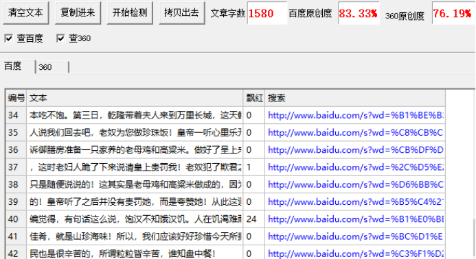

乾隆夸赞是世间最美味，却不是山珍海味，这是为何？
民以食为天，人不可一日不吃东西，食物是维持我们生命的东西，美食，人人都爱，乡下有乡下的风味，各种美味点心数不胜数，有辣的，不辣的，还有各种各样的野味。那么，这曾被乾隆皇帝夸赞最美食物，究竟是什么呢？
乾隆十六年(1751)正月，乾隆第一次南巡江浙地区。他当时是以督察河务海防、考察官方戎政、了解民间疾苦以及奉母游览为由。此次，乾隆南巡并没有带太多人，在快到杭州的时候遇到一帮山贼，山贼不知道那是皇帝只以为是哪个有钱人家，乾隆等人被山贼围了起来，只见带头的山贼说“你们只要把钱交出来，我们可以不伤你们性命！”皇帝的侍卫立刻与山贼打了起来，在打斗过程中皇帝不慎与侍卫们打散，皇帝走到了一个树林里，这下好了，皇帝迷路了。
在树林里，乾隆身上身无分文，也没有吃的，喝的，可以说是饥渴难耐，在饿了几天后，乾隆仿佛看见了有一所看房子，乾隆揉了揉眼睛，以为自己看错了，仔细再一看。确实是有房子，乾隆拖着疲惫不堪的身体来到这里，“里面有人吗？”乾隆细声叫着，只见里面走出一对老人，那对夫妻看着乾隆，感觉他应该好几天没吃饭了，把他扶了进去。
乾隆对着妇人说，“能不能给我点吃的？我实在太饿了！”妇人有家中仅有的一只老母鸡杀了，然后用家里自己种的高粱米煲成饭，把鸡汤煮好捞在一起给乾隆吃。这个皇帝饿了那么久，别说吃了，光是闻见都直流口水啊，乾隆看着妇人端过来，一口不接一口的吃，还嘴里说着，时间美味绝无仅有！吃完皇帝抹了抹嘴巴问老妇人“我刚才吃的是什么东西，怎么如此美味？”妇人说“那是珍珠饭！”
乾隆赞不绝口，说是日后妇人有什么困难可以来找他，并告诉妇人他叫天龙，到京城去找他！妇人把乾隆送下山后背侍卫找到了，不久，乾隆等人南巡结束回到京城。皇帝久久都在思念那珍珠饭的美味，于是乾隆命御膳房做这道珍珠饭给他吃，可是御膳房就怎么都做不出这道菜，还险些被乾隆治欺君之罪，连厨子都换了好几批。
丞相见皇帝如此苦恼，于是给皇上出了个主意！丞相奉乾隆圣旨来到当日他吃饭的那俩人家中，那老妇人看到皇帝圣旨立刻跪下接旨，丞相说“皇帝请老妇人去京城做珍珠饭！”丞相告知那日被饿了几天的人就是当今圣上，如今来请夫人进京。那夫人自知犯了欺君之罪，那根本不是什么珍珠饭，只是她当时随便说说的，这下她可能要被处罚。
于是她自己想了个法子，她跟着丞相进了宫里，见到了乾隆。乾隆给了夫人去御膳房工作，让她只负责照顾乾隆饮食，夫人说“皇上，我可以做珍珠饭给您吃，但是您要答应我三个请求，我才做给您吃！”皇帝心想也可以接受。“好吧，你说！”夫人让乾隆三日都必须听她的，乾隆急了，“这怎么行，我堂堂一国之君岂能听你的？”
夫人说“皇上，我只需你听我的饮食，国事不必！”乾隆也照旧答应了！第一日，乾隆带着夫人到御花园游玩，夫人只给了皇帝一个糠饼，乾隆也怎么可能会吃这种东西，于是乾隆不吃那糠饼，饿了一天。第二日，乾隆带着夫人去了紫荆山，这天，夫人给了皇帝一个玉米饼，这次这个饼好吃一点，乾隆也饿了一天了于是吃了点，但是根本吃不饱。
第三日，乾隆带着夫人来到万里长城，这天乾隆已经饿的精疲力尽，夫人说“我们回去吧，老奴为您做珍珠饭！”皇帝一听心里乐开了花。他们回到宫里，夫人告诉御膳房准备一只家养的老母鸡和高粱米。做好了呈上来乾隆吃的津津有味，赞不绝口，这时老妇人跪了下来说“请皇上责罚我！老奴犯了欺君之罪！这不是珍珠饭，那日我也只是随便说说的！这其实是老母鸡和高粱米做成的，因为高粱米像珍珠所以我才这么说的！”
皇帝听了之后并没有责罚她，而是夸赞她！从此这道佳肴就叫“珍珠饭！”
小编觉得，有句话这么说，饱汉不知饿汉饥。人在饥渴难耐的时候在眼前的食物就是美味佳肴，就是山珍海味！所以，我们应该好好珍惜今天所拥有的美食，不要浪费食物。农民也是很辛苦的，所谓“粒粒皆辛苦，谁知盘中餐！”
